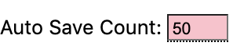

Phil’s Menu items¶
Menu items are found on the left-hand side of the page.
Create a new puzzle.
Brings up a previously saved puzzle.

Save the current puzzle in various formats:
Phil puzzle (.xw) is the standard format.
Note: If  is greater than zero, the puzzle will be saved in this format after the specified number of changes.
Across Lite (.puz) is the format used by Across Lite
Printable version (.pdf) displays the blank grid along with clues
NYT submission displays a form suitable for submission to the New York Times. It includes a blank grid, all clues and a filled in grid.
Layout an empty grid that is either 15x15 or 21x21. Repeated requests for a quick layout selects from a small set of grid patterns.
Freezes the pattern from structural changes (i.e., adding or removing black squares).

Clears answers in the white squares.

Toggles whether the puzzle pattern must be symmetric.
Toggles whether all answers matching a the puzzle pattern are displayed or only moderately- and highly-recommended ones are. See Recommended Answers for more details.